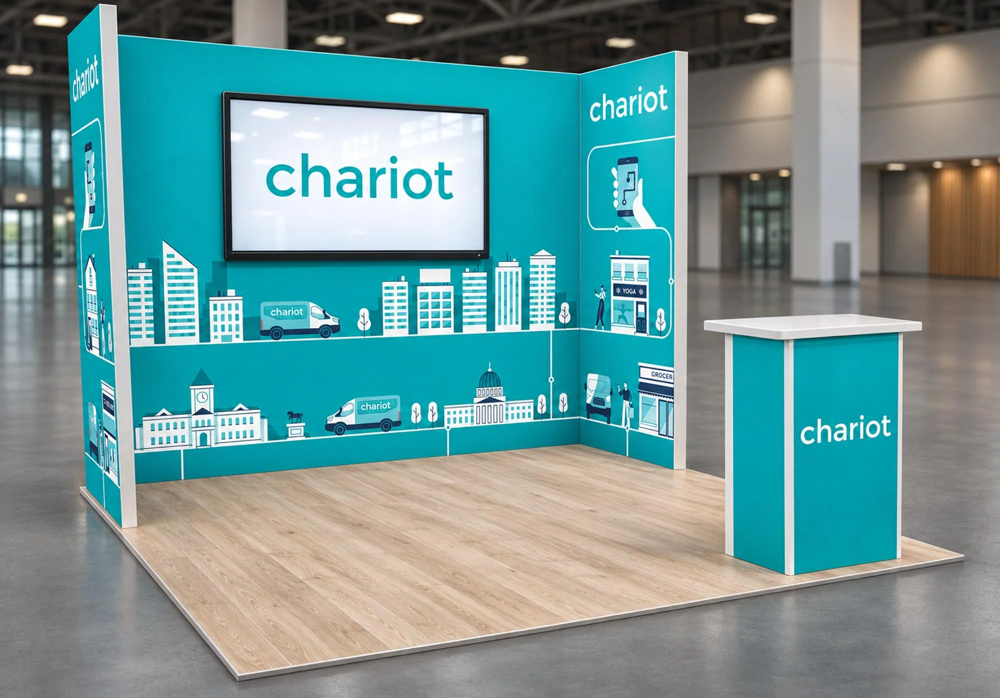
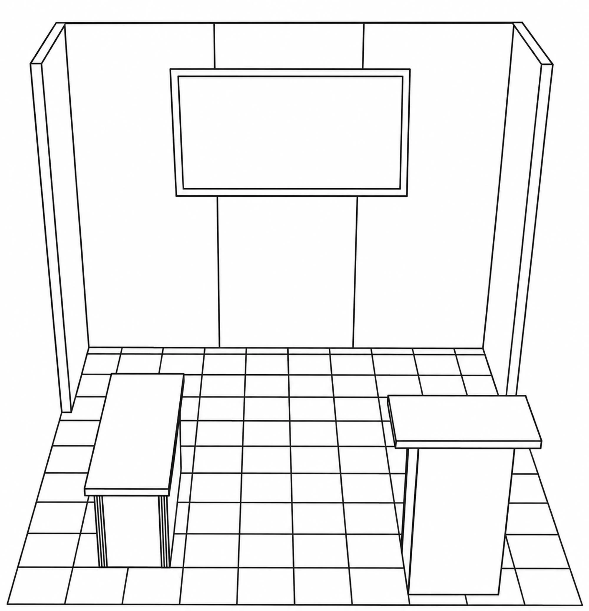
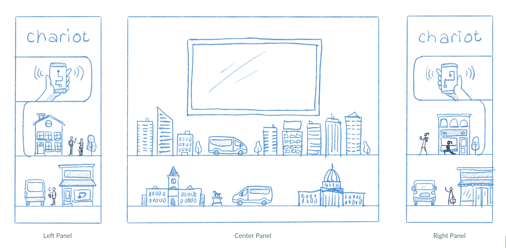
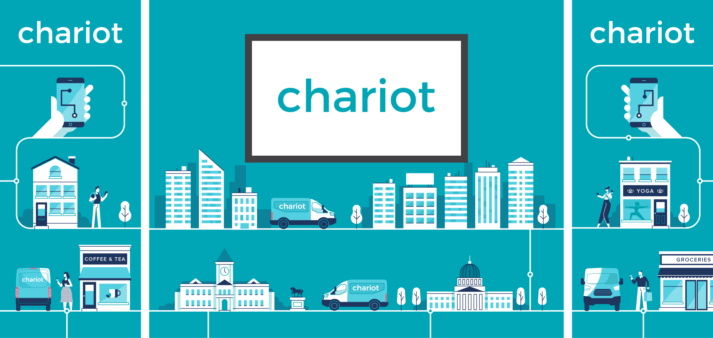
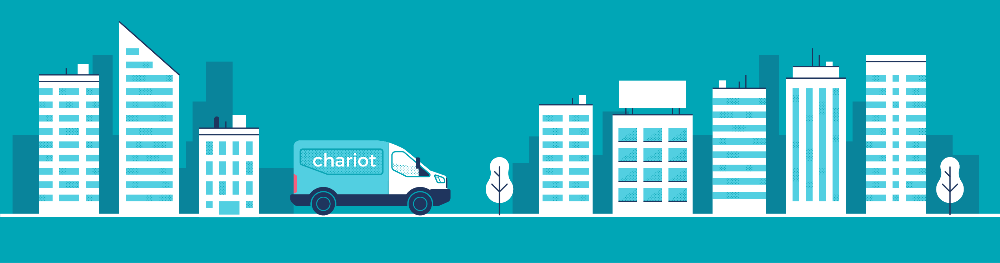
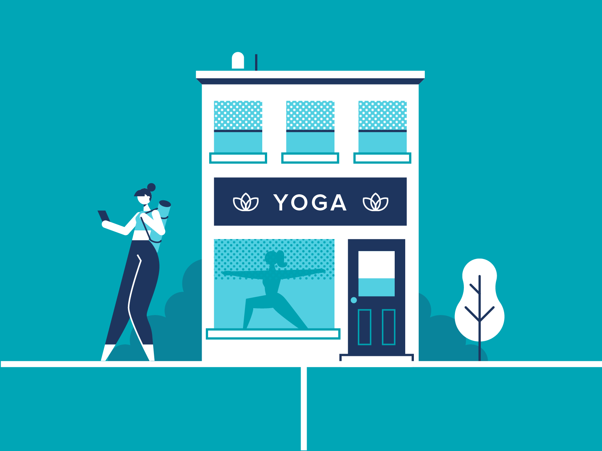
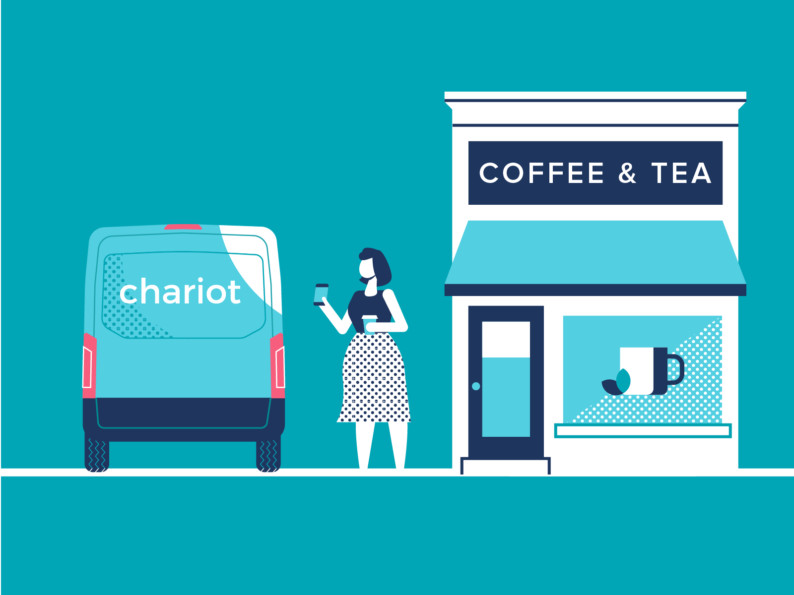
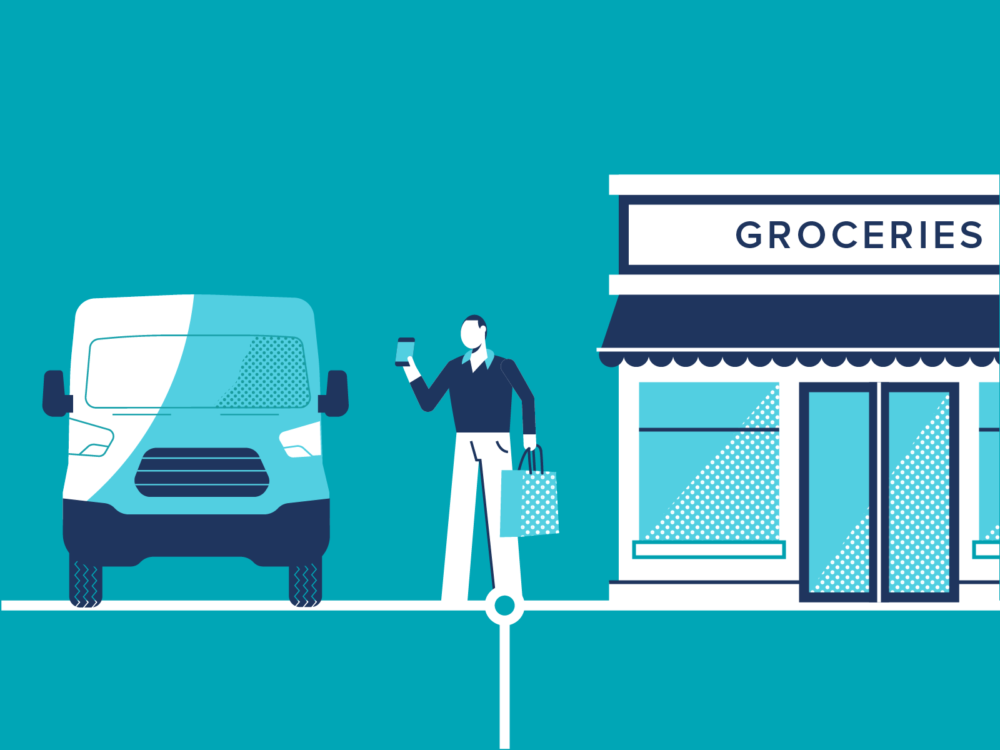
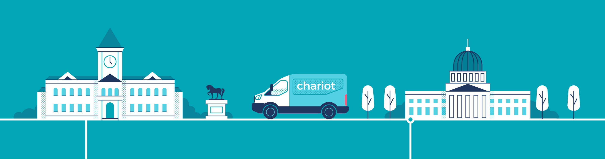

Challenge
Introduce an unfamiliar transportation service to commuters, businesses, and government audiences—using illustration instead of photography or taglines, within a 10 × 10-foot booth.
I designed Chariot’s first trade show booth, using illustration to connect its mobile app, shuttle service, and the places people go.

Introduce an unfamiliar transportation service to commuters, businesses, and government audiences—using illustration instead of photography or taglines, within a 10 × 10-foot booth.
Create a connected world of riders, shuttles, and destinations. Extend Chariot’s visual language across three wall panels, with route lines linking the scenes around a central display.
A bright, inviting booth that stood apart from darker displays at the event. Lead generation exceeded the team's goals, and the illustration set was built to carry into other marketing.
The Approach
The booth needed to speak to commuters, business partners, and government representatives, many unfamiliar with Chariot. I focused on making the service easy to understand: showing how people book through the app, ride in a shuttle, and reach familiar destinations.
The space was fixed: a 10×10 ft frame, two side walls, and a large monitor mounted in the middle of the back wall. Marketing wanted Chariot's story told entirely through illustration. Before sketching, I worked out who would walk past and what they'd need from a 30-second look.

The Concept
Each side panel follows a rider from booking through the app to everyday destinations. The center panel expands the view to the places Chariot serves: downtowns, campuses, and government buildings. Thin map-like route lines connect the scenes and guide the eye toward the central monitor, where a video explains more about Chariot and how the service works.

The Visual Language
To make the booth feel like the product, I reused the shape language from Chariot's app and website: solid shapes, line work and dot patterns. The palette stays inside the brand colors already used in marketing, so the booth sits next to everything else Chariot made.

Illustration Details
Every scene follows the same rule: a person with a phone, a Chariot van, and a place they want to be. The panels were sized to read from the aisle and still reward someone who steps in close.





The Finished experience
Most booths at the show went dark and moody. Chariot's was bright, easy to read and inviting, and people walked in to ask how it worked. Lead generation from the event exceeded what our team expected.
Takeaways
01
People don't remember a feature list from the aisle. Showing someone tap a phone and step into a van explained Chariot faster than any headline could.
02
Reusing the app's shapes and dot patterns made the booth feel like Chariot instead of a one-off event graphic, and it saved time.
03
Big shapes and high contrast brought people in from across the hall. The small story details (shop signs, a yoga pose in a window) rewarded people who step in.
Up Next